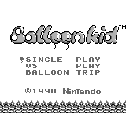
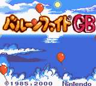

Balloon Kid
This article must comply with the non-Pokémon glitches guideline.
| Balloon Kid, Balloon Fight GB | |
|   | |
| Wikipedia link | Balloon Kid |
| Developer(s) | Nintendo Research & Development 1, Pax Softnica |
| Publisher(s) | Nintendo |
| Platform(s) | Game Boy |
| Release date(s) | Balloon Kid Game Boy: October 5, 1990 (North America), January 31, 1991 (Europe) Balloon Fight GB: July 31, 2000, August 1, 2000 (Nintendo Power service) |
Some parts of this article have not yet been fully reviewed by a member of this wiki's staff or QC team.
| |

|
Data from the Internet can be inaccurate or false, and it is easy to misremember information. For this reason there is more likely to be incorrect information in this article. This template will be removed once the information is peer-reviewed and tested by a staff or QC member. |
Balloon Kid (North America, Europe) and Balloon Fight GB (Japan, 2000) are video games based on the Nintendo Entertainment System game Balloon Fight.
The original game was released as a standard Game Boy cartridge in North America and Europe and was never released in Japan until much later as an enhanced Game Boy Color game known as Balloon Fight GB.
Balloon Fight GB was only released for the now defunct "Nintendo Power" cartridge service (not to be confused with the American Nintendo Power magazine) in which players could write games to special Game Boy or Super Famicom cartridges. The Game Boy versions of these cartridges are known as GB Memory cartridges. Pre-written versions of the game were also available albeit still on a GB Memory cartridge, but featuring a special badge based on the game.
Although Japan didn't get Balloon Fight GB until the year 2000, Character Soft and Mario Co. Ltd released a Japanese port of Balloon Kid on March 27, 1992 known as Hello Kitty World featuring Hello Kitty, Mimmy and Tippy bear instead of Alice, Samm and Jim.
Unlike Balloon Fight the game features a main story mode in which a young girl known as Alice must travel through eight stages floating on balloons to locate her brother Jim. She is able to inflate balloons whenever she is on ground in case she loses them.
A multiplayer mode and a Balloon Trip mode (based on the Balloon Trip mode from Balloon Fight) is also included in the game.
Double jump
This glitch is thanks to Bluestone19, and Balloon Fight Wiki, and involves the player momentarily holding and then releasing the jump button, causing a stutter.
Cheat only curiosities
End of Balloon Trip mode
With the use of a cheating device to stay floating in the air, an end of the Balloon Trip mode stage has been observed in which there is a small section of the stage without any water. However, it is not known if this is the result of the codes of rather than a glitch.
(Video)
Glitch stages
Glitch stages can be accessed with the GameShark code 01xx13DE (both Balloon Kid and Balloon Fight GB) or 01xx07C0 (on the stage map in Balloon Fight GB), where xx should be replaced with the desired stage.
- 0A-0C: Glitched versions of the Vs. Stage with a glitched Samm.
- 81-8F: Copies of valid stages 01-0F but with the wrong palette (sometimes changing after losing a life) and water enemy.
(Video)
Note: Although this has only been confirmed with a cheating device, it is theoretically possible with cart-swap arbitrary code execution as well.